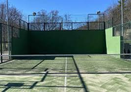
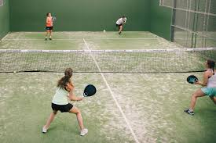
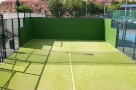
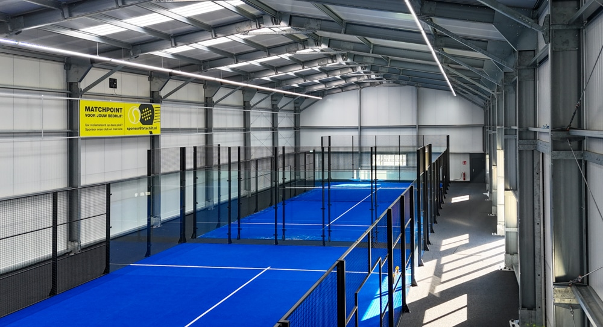
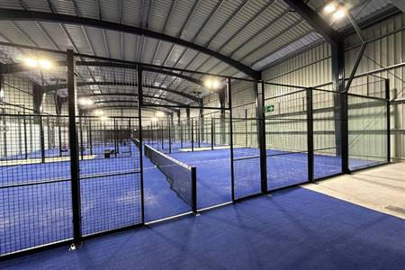
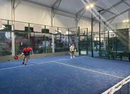

En el proyecto se contempla la dotación de cuatro pistas de pádel para el polideportivo, con el objetivo de ampliar la oferta deportiva y mejorar las instalaciones disponibles para los usuarios. Concretamente, se disponen dos pistas de pádel descubiertas, situadas en el Polideportivo Los Pasos, y dos pistas de pádel cubiertas, ubicadas en el interior del Campo Municipal B4.
Polideportivo Los Pasos
Las pistas descubiertas permiten la práctica del pádel al aire libre, integrándose en la zona exterior del complejo deportivo y aprovechando las condiciones climáticas favorables.



Campo Municipal B4
Las pistas cubiertas se sitúan dentro del pabellón, lo que garantiza su uso durante todo el año y en cualquier condición meteorológica.


